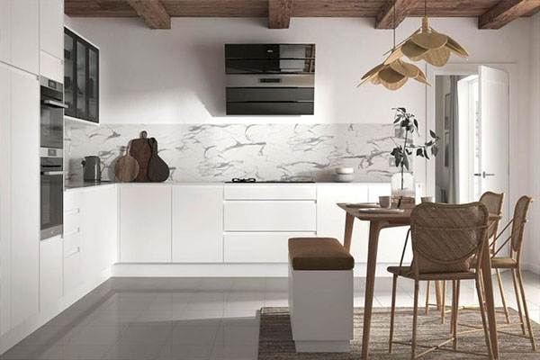

-
کابینت آشپزخانه چیست؟
کابینت (به فرانسوی: Cabinet) قفسه ای است که گاهی در حمام و اغلب در آشپزخانه برای نگهداری مواد غذایی، لوازم پخت و پز و ظروف استفاده می شود. کابینت ها در آشپزخانه های ...
-
کابینت آماده چیست ؟
کابینت های آماده یا پیش ساخته در کارخانجات و کارگاه های بزرگ تولید کابینت به صورت سری و انبوه تولید میشوند. ...

-
کابینت سفارشی چیست ؟
کابینت هایی که با توجه به فضا و سلیقهی شخصی شما طراحی و اجرا میشوند را کابینت های سفارشی میگویند. در این نوع از کابینت ها ...
-
کمد دیواری
واضح است که به کابینت های دیواری که به منظور نگهداری لباس، لوازم و غیره بصورت دیواری استفاده می شوند، کمد دیواری می گویند. این کمد ها یا کابینت ها ...
-
آشنایی با سه سبک در طراحی دکوراسیون آشپزخانه
کابینت قلب آشپزخانه است و خیلی کاربردی برای آشپزی راحت تر و دسترسی راحت به ظروف و همچنین ادویه جات و خیلی کار های دیگه کابینت سبک های زیادی دارد از جمله مدرن کلاسیک و نئوکلاسیک پولیشی و پولندی ایتالیای...
 -
کابینت آشپزخانه کلاسیک
طراحی و سبکهای کلاسیک، یکی از زیباترین و فاخرترین مدلهای طراحی خانه و آشپزخانه هستند. کلاسیک به معنای چیزی است که مدرن نیست؛ بنابراین ...

-
کابینت آشپزخانه نئوکلاسیک
یکی از سبک های ساخت کابینت آشپزخانه مدل نئوکلاسیک است. سبک نئوکلاسیک در قرون هجدهم و نوزدهم به عنوان یکی از سبک های جذاب و زیبا در معماری دکوراسیون داخلی مورد استفاده ...

-
کابینت آشپزخانه با دستگیره یا بدون دستگیره؟
آشپزخانه مثل سالن پذیرایی از بخش های مهم و قابل توجه در هر خانه است و فضای اصلی محیط آشپزخانه را چیزی بنام کابینت آشپزخانه تزئین می کند. یک سوالی که همه ی افراد هنگام سفارش کابینت آشپزخانه با آن مواجه می شوند، این است که کابینت آشپزخانه با دستگیره یا بدون دستگیره سفارش دهم؟

-
دکوراسیون داخل منزل کوچک و آشنایی با بهترین طرح ها و ایده های چیدمان
کابینت قلب آشپزخانه است و خیلی کاربردی برای آشپزی راحت تر و دسترسی راحت به ظروف و همچنین ادویه جات و خیلی کار های دیگه کابینت سبک های زیادی دارد از جمله مدرن کلاسیک و نئوکلاسیک پولیشی و پولندی ایتالیای...